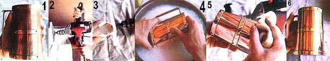

You can put some shine in your environment, without having to do a lot of tiresome work.
Removing tarnish from brass, copper, silver, and other metal objects is usually a pretty tedious task, but I've discovered a way to polish such pieces without spending hours buffing . . . and without running the risk of marring the metal with the unsightly scratches that many commonly used abrasive cleaners can cause. My method produces a fine, handrubbed look in a matter of minutes, and makes the thought of shining up those salable "bargains", frequently found at flea markets and in neglected attics, a lot more appealing.
Most of the materials needed to duplicate my polishing technique can be found in the home workshop. First, you'll need a power hand drill and some place to mount it . . . either a workbench vise or a drill stand. The job will also require a cloth polishing wheel and a buffing bonnet. Finally, your most important ingredient will be a stick of polishing compound . . . also called jeweler's rouge.
The cost of this last item can-I've learned the hard way-vary widely. A local retail jeweler reluctantly sold me my first five-ounce stick for a whopping $5.00 . . . and while it's true that a little of the substance goes a long way, that was far from being a bargain? I later found a two-ounce stick at a Tandycraft outlet for only 69 cents, and have since noted that similar amounts sell for $1.75 to $3.75 at other arts and crafts shops and hardware stores in my part of Oklahoma.
Once you've located all the necessary items, screw the polishing wheel onto the rubber backup pad, and slip the attachment into the drill chuck. (Be sure to tighten the chuck firmly, so the wheel won't fly off as you polish.) Now, mount the drill securely in the vise or stand.
When you turn on the motor, engage the drill's trigger lock in order to free both your hands . . . then apply polishing compound by simply bringing it into contact with the rotating wheel for about five seconds. Next, grasp the object to be polished in both hands. It's best to maintain a rigid grip at least until you get used to the force of the machine, because the rotating wheel exerts a surprising amount of pull and could yank a loosely held piece away from you. (Small objects, such as belt buckles, can be manipulated with a pair of pliers whose jaws have been wrapped with masking tape to prevent their scratching the metal. Conversely, when you want to shine large, heavy pieces-a brass umbrella stand, for example-it's usually easier to remove the drill from the vise and use it freehand . . . but doing so will require a bit of muscle and a lot of practice.)
For best results, hold the to-be-polished item against the wheel and move it slowly, shining a small area at a time. The circular movement will heat both the compound and the metal . . . and, as the tarnish combines with the cleaner, it will form a gummy black substance. Most of this will be carried away on the wheel, but when the buildup is heavy, you'll probably want to wipe off the gum from time to time with a soft cloth. (On tough jobs it may also be necessary to apply additional compound to the wheel during the polishing process.)
Once the tarnish has been completely removed, turn off the drill and fit it with a buffing bonnet (or a clean polishing wheel). Then turn on the tool, reset the trigger lock, and buff the metal object thoroughly.
Finally, wash the newly shined piece in warm, soapy water to remove the last traces of the polishing compound . . . rinse it carefully . . . and use a soft, absorbent cloth to dry it quickly and completely. Avoid any unnecessary handling of the polished surfaces afterward, since the oils, acids, and moisture from your hands will accelerate the retarnishing process.
You can slow down the inevitable future oxidation by simply applying a thin coat of clear paste wax to the metal . . . letting it dry for several minutes . . . then buffing it again with a clean bonnet or wheel. Don't, however, wax objects that will be heated or will contact food, such as copper-bottomed pots and silver serving utensils.
Of course, even if you do take precautions, tarnish will build up again eventually . . . but now that you know my secret, putting a shine on the metal in your life should never be a wearisome chore again!
|
 [1] Shining up metal objects can be a tedious chore . . . [2] but not if you use a buffer attached to a mounted hand drill. [3] Put a little jeweler's rouge on the buffer. [4] Wash the object well in soapy water when you've finished the job. [5] Rinse and dry it quickly . . . [6] and then just look at it shine! |
|
|